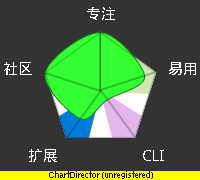
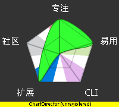
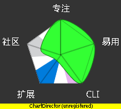
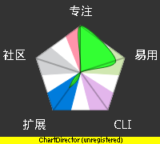
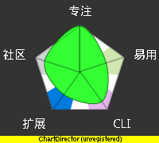
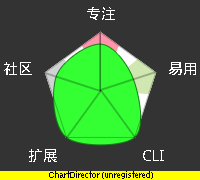
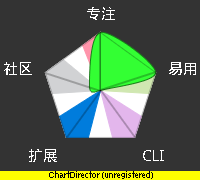
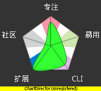
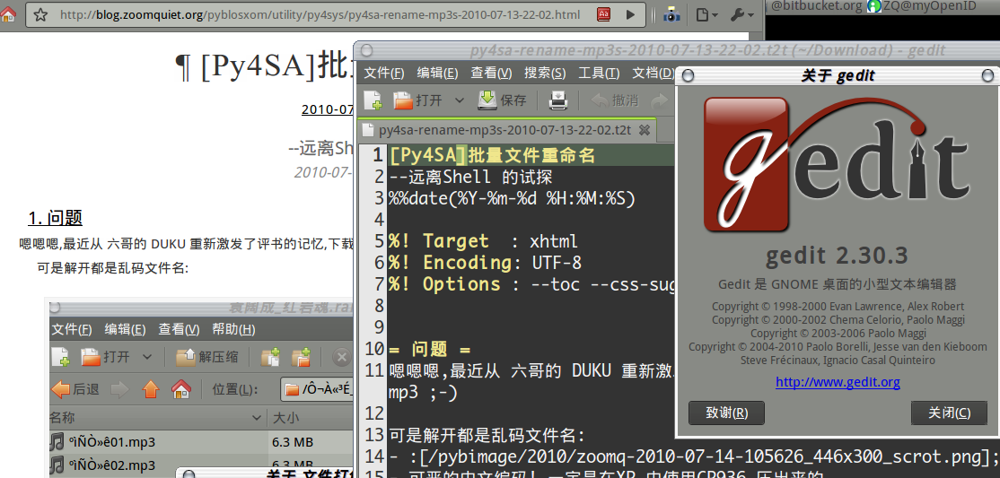
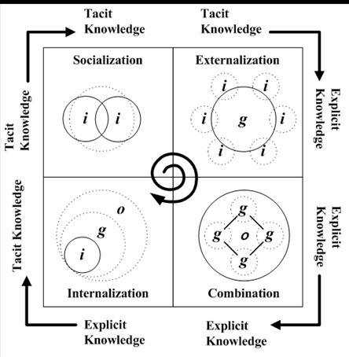

我的工具箱
～持续的效率进化之旅 (powered by rst2S5)
<免责/>
参考所有同好行为总结而得
- 一切资料来自网络互动挖掘
- 一切想法来自日常学习工作
- 一切体悟来自各种沟通交流
- 一切知识来自社区分享印证
- 一切经验来自个人失败体验
高橋流!

<brief/>
- 5' 有关ZQ
- 45' 效能工具箱
- 10'自由沟通
<Zoom.Quiet>


开发@上海
战上海:HTML->JS->PHP->XSL->Py
~2004
- C hina
- Z ope
- U ser
- G roup


 MoinMoin 1.4.*
MoinMoin 1.4.* MoinMoin 1.7.*
MoinMoin 1.7.* MoinMoin 1.9.*
MoinMoin 1.9.*
2005:CPyUG-> BPyUG
working with Python,in SINA.com

- 在北京,主持完成了25次技术分享
- 进入金山,使用Python 进行了各种平台的构建~ KTRAC
- spreading Python everywhere to everyone...
- 珠 三角
- P ython
- U ser
- G roup


spreading Python everywhere to everyone...
2009-09-01 出版
- 将多年的体验,集中到一本入门图书 "可爱的Python"
- 并主持ZPyUG 近10次技术分享

2010~

</Zoom.Quiet>
- 纯种Pythoner，自由软件原教旨主义者
- 关注社会化教育及知识管理；喜爱SF和摄影。
- 尝试使用Pythonic体验感化国人主动进入自由软件世界体验/学习/再创作
(^.^)
<brief/>
- 5' 有关ZQ
- 45' 效能工具箱
- 10'自由沟通
评估雷达
- 专注度~没有意外功能..
- 易用性度~学习成本
- CIL可自动化性
- 扩展度 ~ 数据是否标准
- 社区活跃度

易用离线网页抓取管理插件

桌面维基,perl 实现,易用信息速记平台...


Linux 平台专用加速火狐!...


.chm帮助查阅最爱插件!...


核心的核心沟通平台! 

GTD总流程
Get Things Done 是种生活态度...

工作邮件态度:收件箱...
GTD分类配合定期处置／回顾，以及固化的处理行为！...
| 空! |
 |
2010-09-17-lighting_scrot.png
独立的日历/事务/行程 综合管理中心! 

命令行中的音乐播放器 

无敌强力播放平台!

有关输入...
9+ 输入加速 只要愿意任何一个常用行为,都有可提升效率的工具来支持!
</import>
TONY.BUZAN发明的思維工具,极靠谱的风行全球......
Mind map

最新开源跨平台思維导图工具,支持快速分享空间!!

来自AT&T 的绝佳图形脚本工具!


# wsd_flow.txt
participant "思想" as mind
participant "脚本" as txt
participant "WebSequenceDiagrams.com" as WSD
mind->txt: 记述思想
activate txt
txt->WSD: 直接提交
activate WSD
WSD->mind: 返回图片
deactivate WSD
mind->mind: 对话/重构
deactivate mind
mind->txt: 修订记述
手绘
直觉的记录思維!...


有关思考...
在任何情况下坚持使用思维导图才能积累出分析型思維...
</think>
 表形码
表形码
消失在历史中的优秀输入法!... 
单纯的角色才有助于卓越的成果生产!任何所见即所得的撰写环境都是扯!...
所想
即所得

在线
转换
纯HTML 幻灯撰写框架!...

- S5== a S imple S tandards-Based S lide S how S ystem
- 仅仅依靠 CSS+JS 的HTML格式幻灯演示框架


图书/帮助/网站，rST组织/管理/发布工具集... 


高级通用脚本语言...随身的军刀!... 

主流维基引擎，无DB，纯Py 扩展丰富...


超给力的FF编辑辅助插件..... 


纯geek 的blogging 系統.. 


小时间?
精神
集中
纸+笔
永远无法替代的记录工具！...

原则: 面向肌肉的操作
- M uscle
- O riented
- O perating
</MyToolBox>

SNS学习原理:0

SNS学习原理:2

- 知识只有流动才有价值...
- 野中郁次郎（Ikujiro Nonaka）和竹内弘高（Hirotaka Takeuchi）认为...

EKM
企业知识管理
# 技术学派: KM是对信息的管理;
# 行为学派: KM是对人的管理;
# 综合学派: KM是将信息处理能力和人的创造力结合,增强组织对环境的适应能力;

<brief/>
- 5' 有关ZQ
- 45' 效能工具箱
- 10'自由沟通
总之
期望可以记住的~单位时间可以记住的只有7+-2 个
- 工具关乎人生态度 ;-}
- 邮件管理改进最易获益;
- 坚持 WYTIWYG 终身受益!
- 纸笔永不过时...
- 用各种渠道分享吧!
最后...

最后的最后...

<版本/>
- 101005 根据盛大讲演现场反馈修订错误!
- 100926 增补EKM/工具关联图谱
- 100918 根据SFD2010深圳讲演现场反馈修订!
- 100917 增补软件评估雷图示
- 100915 迁移为 rST2S5 格式
- 100817 为SFD2010zs 重构...
- 100728 增补髙桥流以及蕃茄时间说明
- 100724 为金山新人培训重构
- 100331 为珠三角技术沙龙创建
纯HTML 幻灯撰写框架!...
- S5== a S imple S tandards-Based S lide S how S ystem
- 仅仅依靠 CSS+JS 的HTML格式幻灯演示框架


 ~ 文学化编辑器
~ 文学化编辑器